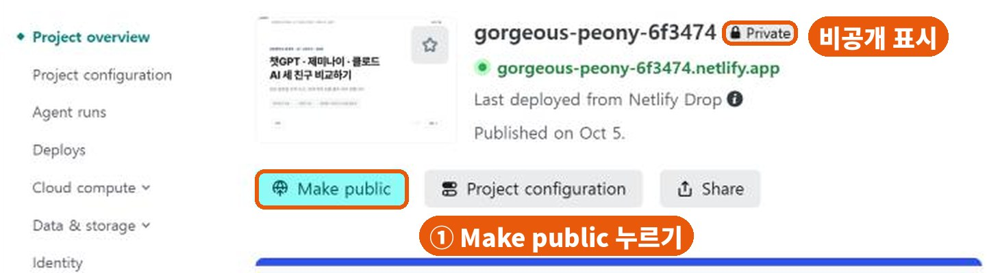
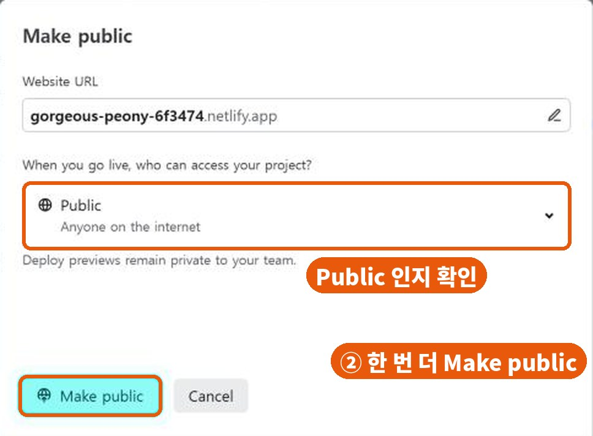
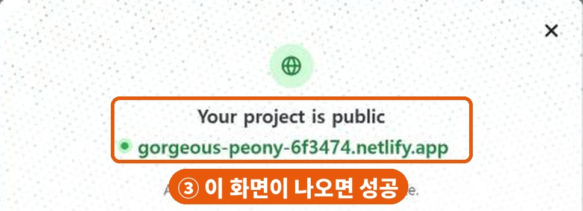

2차시 · 도움말
처음 가입하면 나만 보이게(비공개) 올라갑니다. 두 번만 누르면 누구나 볼 수 있습니다.
💡 내 컴퓨터에서는 잘 보여도 안심하면 안 됩니다 — 나는 로그인되어 있어서 보이는 것입니다. 꼭 폰으로 확인하세요.
올리기를 마치면 나오는 내 사이트 화면입니다. 이름 옆에 🔒 Private가 보이면 아직 비공개예요. 바로 아래 Make public(공개하기)을 누릅니다.

작은 창이 뜹니다. 가운데 칸이 Public(누구나)인지 보고, 왼쪽 아래 Make public을 한 번 더 누릅니다.
⚠ 맨 위 주소 칸(연필 모양)은 건드리지 마세요. 주소가 바뀌어 버립니다.

이 화면이 나오면 공개로 바뀐 것입니다. 오른쪽 위 ✕로 닫으면 이름 옆 표시가 Public으로 바뀌어 있어요.

⚠ 주소를 줄여 주는 사이트(숏.한국 등)로 줄인 주소도 마찬가지입니다. 비공개면 줄인 주소로도 안 열립니다 — 먼저 공개로 바꾸세요.